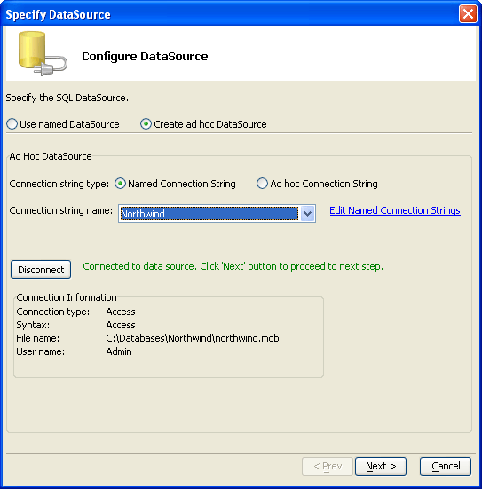

Create ad hoc DataSource
Connecting to a data source requires a connection string. There are 2 different approaches to using a connection string.
Create a named connection string, then build one (or more) data source definitions using it. In this case you may edit the connection string definition separately from the data source definition. The data source definition includes the name of the connection string.
Create an ad hoc connection string and data source definition. In this case the data source definition includes the connection string. You cannot share this connection string.
To create an ad hoc data source.

Select Create ad hoc DataSource.
If have already created and saved a connection string suitable for your application:
Select Named Connection String.
If you need to create a new connection string, click Edit Named Connection Strings.
Select the connection string from the Connection string name list.
If you need to create a new connection string:
Select Ad hoc Connection String.
Optionally, enter the connection string.
Optionally, click Build to display the Create SQL Connection String dialog.
After you have an entry in the Connection String control:
Optionally click Save as named connection string to display the Select Connection Name dialog.
Enter a name for the new connection string into the Connection name control.
Click OK.
Continue with Specify a SQL SELECT Statement.
See Also